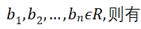
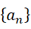

一、 三角不等式：:
二、 伯努利不等式：对
三、 算数-几何平均不等式：
四、 柯西不等式：设;
五、 等差数列前
提一个得：
六、 等差数列的性质：
1. 若，且，则
，则
即 是
是 与的等差中项
与的等差中项
2. 数列为等差数列，每隔项取出一项，则取出的各项仍为等差数列
3. 成等差数列
七、 等比数列前项和公式：
八、 等比数列的性质：
1. 若，且，则
若，则
即是与的等比中项
2. 数列为等比数列，每隔项取出一项，则取出的各项仍为等比数列
3. 成等比数列
九、 向量的内积：
向量的外积：
十、 平面直线方程的五种形式
1. 点斜式：直线的斜率为，且经过点
2. 斜截式：直线的斜率为，在轴上的截距为
3.
两点式：直线经过两点 且
且
4. 截距式：直线在轴和轴上的截距分别为和
5. 一般式：
十一、 已知两条直线：
则
已知两条直线：
十二、